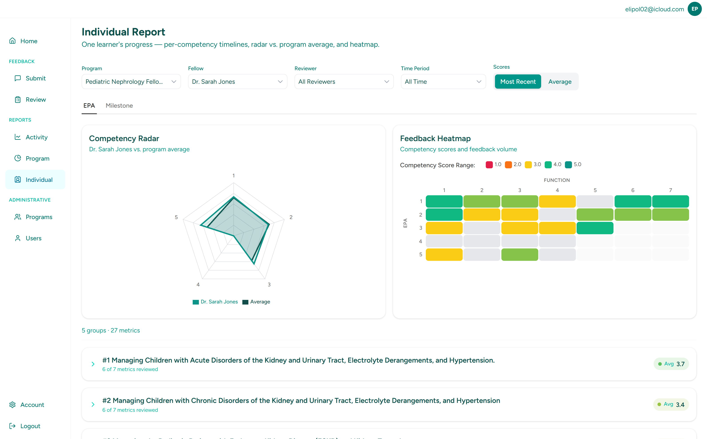

Logistics Operations Platform
Business Software · Current role, sole developer
A set of business tools for a logistics company that handles hiring, employee scheduling, mileage and shift tracking, and parking lot operations.
- AI-assisted hiring that screens resumes, reviews uploaded documents, and runs live screening calls with applicants
- Employee scheduling for shifts across multiple locations and roles
- Mileage and shift tracking for drivers, feeding into payroll
- Parking lot management with automated pricing and customer service request handling
- Driver mobile app for picking up shifts and sharing location while on the job
- In daily use by the company's staff and drivers
Built with FastAPI, Next.js, React Native, PostgreSQL
Repository: Private
AI Phone Agent for Property Management
Voice AI · Current role, took over and shipped to production
An AI phone agent that answers calls for property managers and pulls live information from their property management software.
- Voice agent connected through a custom server to property management APIs such as Buildium
- Lets tenants, owners, and prospects check balances, submit maintenance requests, schedule showings, and more
- Custom dashboard for property managers
- Took over a half-finished codebase, reworked it, and took it to production with real callers
Built with Fastify, PostgreSQL
Repository: Private
Multi-Drone Ground Control Station
Distributed Telemetry · Research project, developed the ground control station
A custom ground control station for flying several MAVLink drones from one screen.
- One live card per drone showing battery, GPS fix and satellite count, ground speed, climb rate, and altitude
- Per-drone commands (arm, takeoff, return-to-launch, mode and mission select), plus Start, Stop, and Return All for the whole fleet
- Each drone's mission waypoints and live position drawn on a satellite map
- Receives object detections from each drone's onboard computer over MAVLink and shows them in the ground station
- Field-tested with two drones flying separate search patterns at the same time
Built with Python, MAVLink, WebSockets, React, PX4 Autopilot, Onboard Computing
AI Medical Feedback Training Platform
AI Data Processing · Industry project with medical educators, sole developer
A platform where faculty give feedback on medical trainees by talking to an AI assistant, which turns that feedback into competency reports.
- Chat-based feedback flow where the assistant prompts reviewers with follow-up questions and examples, and reviewers can switch to voice
- Comments mapped to the program's competency framework (EPAs and milestones)
- Learner reports with a competency radar chart compared against the program average, plus a score heatmap
- Program and activity reports, with admin tools for managing programs and users


Built with Python, FastAPI, LLM and Real-Time APIs, PostgreSQL
Repository: Private
Real-Time Circuit Breaker Monitoring System
Operational Infrastructure · Industry project with electrical contractors, sole developer
A platform for watching a facility's electrical system live, from the substation down to individual circuits, with alerts when something goes wrong.
- Facility tree that mirrors the real wiring, from substation to distribution board, breaker, panel, and circuit, with ratings at every level
- Live current and voltage for every circuit, shown against its breaker rating
- Pinned charts that track current, voltage, and temperature for any circuit side by side
- Alerts and critical-circuit flags, with each organization's facilities kept separate
Built with Python, FastAPI, PostgreSQL, React, WebSockets, Sensor Integration
Repository: Private
Embedded Sleep Monitoring Mask
Embedded Systems · Capstone project, designed the PCB and assisted with embedded code
A wearable sleep mask that records physiological signals overnight using custom analog sensing hardware.
- Custom PCB designed in KiCAD with analog sensor circuitry
- Helped write firmware for signal acquisition and real-time processing
- Helped build the Bluetooth link that streams sensor data to an Android app
- Wearable system that records physiological data during sleep
Built with Arduino / C++, KiCAD, Analog Sensors, Embedded Firmware, PCB Design, Bluetooth, Android